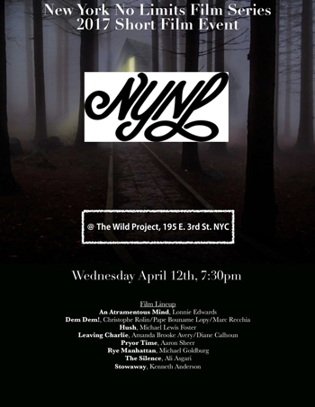

past performance |
|||
| 
New York No Limits Film Series showtimes & tickets:April 12 @ 7:30PM New York No Limits Film Series, an on-going collection of screening events, returns April 12th with its first short film program of 2017. New York No Limits programs films that embody the purest vision of the filmmaker without commercial interference. Concurrently, NYNL supports and nurtures the next generation of noteworthy filmmakers by providing a platform for artists to explore and develop his or her cinematic craft. The April 12th event features a diverse program of 8 short films imbued with the filmmakers vision. AN ATRAMENTOUS MIND, Lonnie Edwards & Layne Marie Williams directors, U. S., experimental DEM DEM!, Christophe Rolin / Pape Bouname Lopy / Marc Recchia directors, Senegal/Belgium, narrative HUSH, Michael Lewis Foster writer / director, U. S., narrative LEAVING CHARLIE, Amanda Brooke Avery & Diane Calhoun directors, written by Amanda Brooke Avery, U.S., narrative PRYOR TIME, Aaron Sheer writer & director, U.S., narrative/comedy RYE MANHATTAN, Michael Goldburg director / Michael Goldburg & David Chan writers, U. S., comedy THE SILENCE, Ali Asgari director & writer, Iran, narrative STOWAWAY, Kenneth Anderson director & writer, U. S., narrative/comedy |
upcoming performances |
|||
 |
|||
| EVQ Film Festival 2018 August 20-25 |
|||
performance archives |
|||
| 2018 | 2017 | 2016 | 2015 |
| 2014 | 2013 | 2012 | 2011 |
| 2010 | 2009 | 2008 | 2007 |